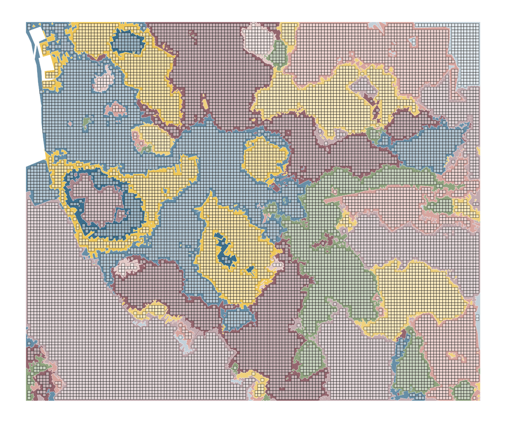
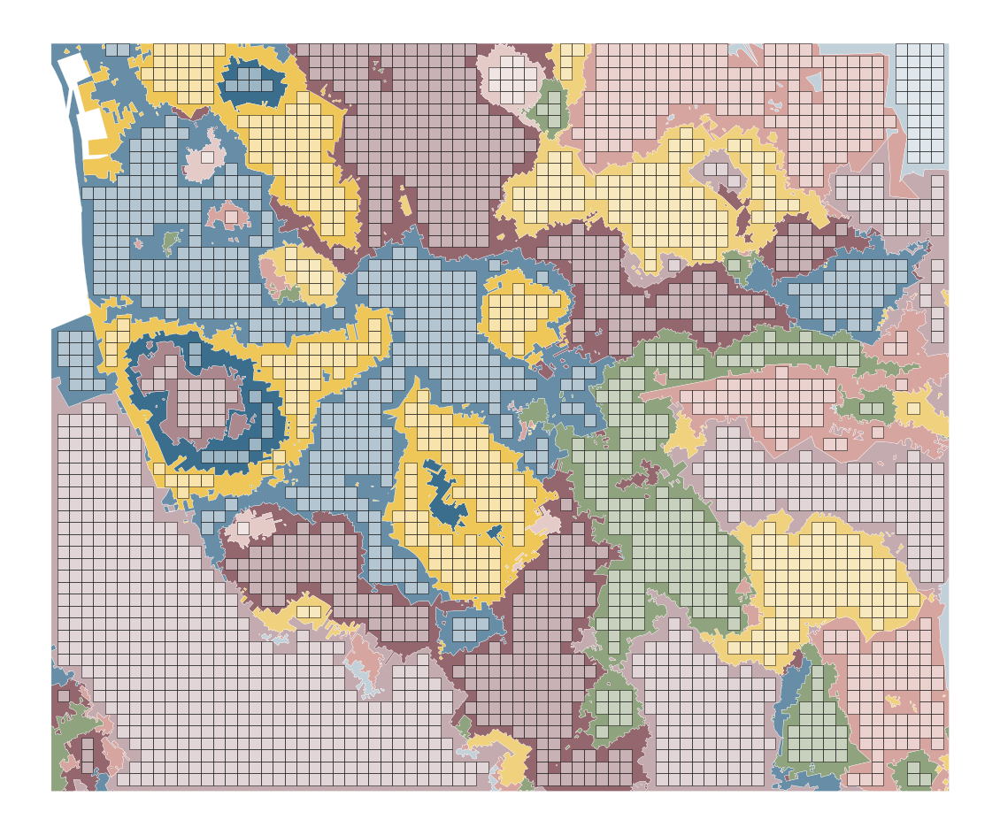
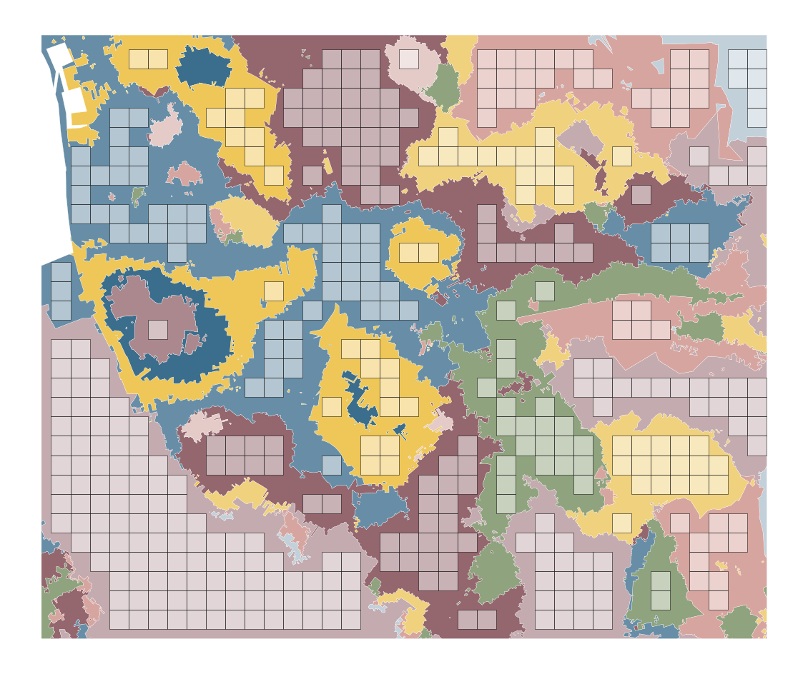
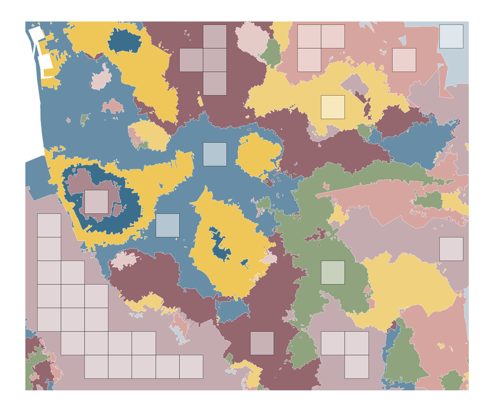
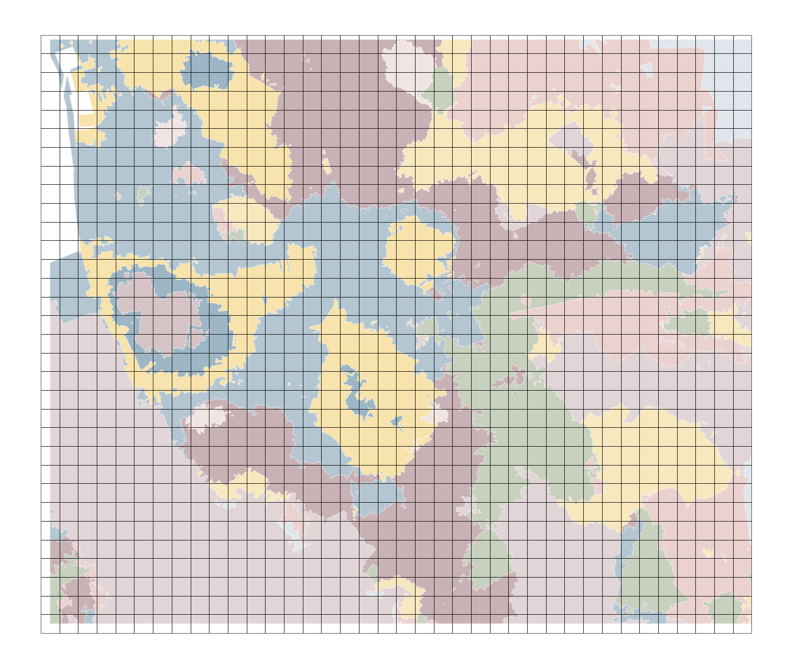

import geopandas
import pyogrio
import numpy
from shapely.geometry import box
from itertools import product
import matplotlib.pyplot as plt
import urbangrammar_graphics as ugg
signatures = pyogrio.read_dataframe(
'/home/jovyan/work/urbangrammar_samba/spatial_signatures/'
'signatures/'
'signatures_combined_levels_simplified.gpkg',
)
bds = (333000, 385000, 345000, 395000)
sample = signatures.cx[bds[0]:bds[2], bds[1]:bds[3]].clip(box(*bds))
chips = {}
for size in [80, 160, 320, 640]:
x_coords = numpy.arange(bds[0], bds[2], size)
y_coords = numpy.arange(bds[1], bds[3], size)
xs = []
ys = []
for x, y in product(x_coords, y_coords):
xs.append(x)
ys.append(y)
chips[size] = geopandas.GeoSeries.from_xy(xs, ys).buffer(size/2, cap_style=3)
cmap = ugg.get_colormap(22, randomize=False)
cols = cmap.colors
symbology = {'0_0': cols[16],
'1_0': cols[15],
'3_0': cols[9],
'4_0': cols[12],
'5_0': cols[21],
'6_0': cols[8],
'7_0': cols[4],
'8_0': cols[18],
'2_0': cols[6],
'2_1': cols[23],
'2_2': cols[19],
'9_0': cols[7],
'9_1': cols[3],
'9_2': cols[22],
'9_3': cols[0], # outlier
'9_4': cols[11],
'9_5': cols[14],
'9_6': cols[0], # outlier
'9_7': cols[0], # outlier
'9_8': cols[0], # outlier
}
_, idx = chips[80].sindex.query_bulk(sample.geometry, predicate='contains')
ax = sample.plot(color=sample['signature_type'].map(symbology), figsize=(20, 20), zorder=1, linewidth=.3, edgecolor='w', alpha=1)
chips[80].iloc[idx].plot(ax=ax, color='w', edgecolor='k', alpha=.5)
ax.set_axis_off()
plt.savefig("figs/chips_80.png", bbox_inches="tight")

_, idx = chips[160].sindex.query_bulk(sample.geometry, predicate='contains')
ax = sample.plot(color=sample['signature_type'].map(symbology), figsize=(20, 20), zorder=1, linewidth=.3, edgecolor='w', alpha=1)
chips[160].iloc[idx].plot(ax=ax, color='w', edgecolor='k', alpha=.5)
ax.set_axis_off()
plt.savefig("figs/chips_160.png", bbox_inches="tight")

_, idx = chips[320].sindex.query_bulk(sample.geometry, predicate='contains')
ax = sample.plot(color=sample['signature_type'].map(symbology), figsize=(20, 20), zorder=1, linewidth=.3, edgecolor='w', alpha=1)
chips[320].iloc[idx].plot(ax=ax, color='w', edgecolor='k', alpha=.5)
ax.set_axis_off()
plt.savefig("figs/chips_320.png", bbox_inches="tight")

_, idx = chips[640].sindex.query_bulk(sample.geometry, predicate='contains')
ax = sample.plot(color=sample['signature_type'].map(symbology), figsize=(20, 20), zorder=1, linewidth=.3, edgecolor='w', alpha=1)
chips[640].iloc[idx].plot(ax=ax, color='w', edgecolor='k', alpha=.5)
ax.set_axis_off()
plt.savefig("figs/chips_640.png", bbox_inches="tight")

for size, df in chips.items():
within = df.sindex.query_bulk(sample.geometry, predicate='contains')[0].shape[0]
print(f"{size} has {within} chips within, which is {within / df.shape[0]} % of maximum.")
80 has 13760 chips within, which is 0.7338666666666667 % of maximum.
160 has 2718 chips within, which is 0.5752380952380952 % of maximum.
320 has 423 chips within, which is 0.34786184210526316 % of maximum.
640 has 38 chips within, which is 0.125 % of maximum.
ax = sample.plot(color=sample['signature_type'].map(symbology), figsize=(20, 20), zorder=1, linewidth=.3, edgecolor='w', alpha=1)
chips[320].plot(ax=ax, color='w', edgecolor='k', alpha=.5)
ax.set_axis_off()
plt.savefig("figs/chips_320_all.png", bbox_inches="tight")
